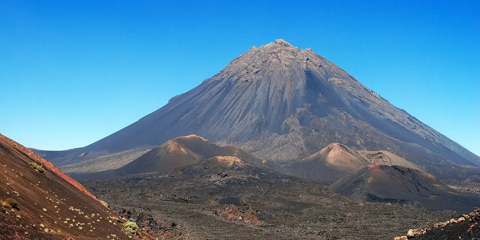

Sub-Saharan Africa
Cape Verde on a budget
Cape Verde's volcanic islands offer mountain hikes on Santo Antão, a crater village on Fogo, soulful morna music in Mindelo and quiet Atlantic beaches.
Photo: Pascal Givry, CC BY-SA 3.0, via Wikimedia Commons

Classic route
Santiago, then São Vicente and the hiking island of Santo Antão. 10 days.
Before you go
Flights to Santo Antão: Skyscanner · Kiwi.com · Google Flights
Hostels and guesthouses in Santo Antão · Mindelo · Fogo · Sal
Tours and tickets: Santo Antão · Mindelo
Mobile data: Cape Verde eSIM
Travel insurance: SafetyWing
How much 11 places in Cape Verde cost
Daily budgets per person in US dollars: a hostel dorm or simple guesthouse, local food, local transport and the usual entry fees.
-
Santo Antão
Hike between terraced green valleys and cliff-hugging coastal trails, staying in small village guesthouses on Cape Verde's best walking island.
Bed $25 · Food $10 · Getting around $5 · Extras $3
Budget tip: Take the ferry from Mindelo; aluguers (shared vans) cover the island. Many hikes run downhill if you get dropped at the top.
$43per day -
Mindelo
Live morna music fills the bars at night, and pastel colonial streets lead down to a busy harbor full of fishing boats.
Bed $25 · Food $12 · Getting around $3 · Extras $3
Budget tip: Visit for the February carnival, but book a room early. Many bars have free live music most nights.
$43per day -
Fogo
A village and vineyards sit inside the crater of an active volcano, with a steep dawn climb to the summit of Pico do Fogo.
Bed $25 · Food $10 · Getting around $5 · Extras $5
Budget tip: Stay in Chã das Caldeiras and climb at dawn with a local guide. Try the crater-grown wine at the village cooperative.
$45per day -
Sal
Long white beaches and kitesurfing at Santa Maria, plus floating in the salty pools of the Pedra de Lume crater.
Bed $30 · Food $12 · Getting around $4 · Extras $10
Budget tip: Cheap flights land here, but move on to other islands soon. Eat at local places back from the beach.
$56per day -
Tarrafal
A beach town of calm sandy coves at Santiago's northern tip, with a museum in the former political prison camp.
Bed $20 · Food $10 · Getting around $4 · Extras $3
Budget tip: Aluguers from Praia take about 2 hours through the Serra Malagueta mountains, a scenic and cheap ride.
$37per day -
Brava
The smallest inhabited island, green and flowery, with old cobbled paths linking villages for quiet hikes.
Bed $20 · Food $10 · Getting around $4 · Extras $3
Budget tip: Ferries from Fogo are short but weather dependent, so leave spare days in your plans.
$37per day -
Praia
The capital on Santiago island, with the Plateau old town, a busy market and soulful live morna music at night.
Bed $25 · Food $10 · Getting around $3 · Extras $3
Budget tip: Aluguers, the shared vans, cost a dollar or two. Visit Cidade Velha, the first colonial town in the tropics, as a day trip.
$41per day -
Cidade Velha
First European colonial town in the tropics, with the cobbled Rua Banana, the Fortaleza Real de São Filipe and ruined cathedral on Santiago.
Bed $25 · Food $10 · Getting around $3 · Extras $5
Budget tip: Catch an aluguer minibus from Praia for a cheap ride and visit as a day trip, since lodging in Praia offers more choice.
$43per day -
São Nicolau
Quiet mountainous island crowned by Monte Gordo natural park, with dragon trees, the valley town of Ribeira Brava and dramatic coastal paths.
Bed $25 · Food $10 · Getting around $5 · Extras $3
Budget tip: Inter-island ferries are infrequent, so check schedules well ahead, and stay in family pensions in Ribeira Brava for lower prices.
$43per day -
Maio
Sleepy flat island of long empty beaches, salt pans and fishing villages, with turtle nesting from July to October.
Bed $25 · Food $10 · Getting around $5 · Extras $3
Budget tip: Rent a bike or walk around Vila do Maio, and join a local turtle-watching programme rather than a private tour during nesting season.
$43per day -
Boa Vista
Saharan-style dunes, long empty beaches and nesting loggerhead turtles from July to October on Cape Verde's wildest island.
Bed $30 · Food $12 · Getting around $6 · Extras $10
Budget tip: Rent a 4x4 with other travellers to explore. Join a turtle-watch with a local conservation group.
$58per day
Know before you go
Cape Verde on a budget: the basics
Currency
$1 = 98.01 CVE
Cape Verdean escudo
| Dollars to CVE | CVE to dollars | ||
|---|---|---|---|
| $1 | 98.01 CVE | 10 CVE | $0.102 |
| $5 | 490 CVE | 50 CVE | $0.51 |
| $10 | 980 CVE | 100 CVE | $1.02 |
| $20 | 1,960 CVE | 500 CVE | $5.10 |
| $50 | 4,900 CVE | 1,000 CVE | $10.20 |
| $100 | 9,801 CVE | 5,000 CVE | $51.02 |
A typical day here (about $45) is roughly 4,400 CVE.
Mid-market rate on 2026-10-05. Cash machines and exchange desks pay a little less.
Getting around
Aluguers (shared minivans and pickups) are the cheap way around each island and leave when full. Ferries link São Vicente and Santo Antão daily, while longer island hops are usually faster by domestic flight. Ferry schedules between other islands are irregular, so leave slack in your plans.
Where to sleep
Pensões, residenciais and small guesthouses are the budget options, plus a few hostels in Praia and Mindelo. Santo Antão has rural guesthouses that suit hikers.
What to eat
- Cachupa: hearty stew of corn, beans and meat or fish
- Pastel com diabo dentro: fried pastry with spicy tuna filling
- Queijo de cabra: fresh goat's cheese from the islands
- Grogue: strong sugarcane rum
Money
ATMs work with Visa, though Mastercard is less reliable, and many smaller places take cash only. Tipping is modest and haggling isn't usual.
Phone data
CVMóvel and Unitel T+ SIMs are cheap with a passport, and coverage is good in towns.
Heads up
Hiking trails on Santo Antão are steep and exposed, so carry water and start early.
Cape Verde travel: quick answers
How much does a day in Cape Verde cost on a budget?
About $45 a day for one person, from $37 in Tarrafal to $58 in Boa Vista. That covers a hostel dorm or simple guesthouse, local food, local transport and the usual entry fees, so a week runs about $315 before flights.
When is the best time to visit Cape Verde?
November to June is the best time, with the most reliable weather for getting around.
What is the cheapest place to visit in Cape Verde?
Tarrafal, at about $37 a day. A beach town of calm sandy coves at Santiago's northern tip, with a museum in the former political prison camp.
How long do you need in Cape Verde?
Santiago, then São Vicente and the hiking island of Santo Antão. 10 days.
How much is $1 in Cape Verde?
One US dollar is about 98.01 Cape Verdean escudo (CVE), going by the mid-market rate on 2026-10-05. So $20 is roughly 1,960 CVE, and a typical budget day of $45 comes to about 4,400 CVE.
How do you get around Cape Verde cheaply?
Aluguers (shared minivans and pickups) are the cheap way around each island and leave when full. Ferries link São Vicente and Santo Antão daily, while longer island hops are usually faster by domestic flight. Ferry schedules between other islands are irregular, so leave slack in your plans.
What food should you try in Cape Verde?
Cachupa, hearty stew of corn, beans and meat or fish. Pastel com diabo dentro, fried pastry with spicy tuna filling. Queijo de cabra, fresh goat's cheese from the islands. Grogue, strong sugarcane rum.
Planning around the seasons? See where to go in November, or compare the cheapest countries nearby.
Similar budgets nearby
- Eritrea $43/day
- Côte d'Ivoire $42/day
- Angola $48/day
- Sierra Leone $40/day